library(tidyverse)
library(gridExtra)Chapter 9 (Lab)
Support Vector Machines
9.6.1 Support Vector Classifier
We could use the support vector classifier from the e1071 library, or the LibLineaR library. Here, in this lab we use e1071 and its function svm() with kernel = "linear" argument.
library(e1071)
options(digits = 2)
# Creating a simulated data set
set.seed(3)
x <- matrix(data = rnorm(40), ncol = 2)
y <- c(rep(1, 10), rep(-1, 10))
# Changing x values in set y=1
x[y == 1, ] <- x[y == 1, ] + 1
# Forming a data frame from x and y (creating y as a factor, so that svm() can be used)
sv.data <- data.frame(x = x, y = as.factor(y))
# checking whether the data set generated is linearly separable
ggplot(data = sv.data) +
geom_point(aes(x = x.1, y = x.2, col = y),
pch = 20, size = 4
) +
labs(
x = "x1 (First variable)", y = "x2 (Second Variable)",
title = "Plot of 2-dimensional simulated data set",
col = "Class (y)"
) +
theme_bw()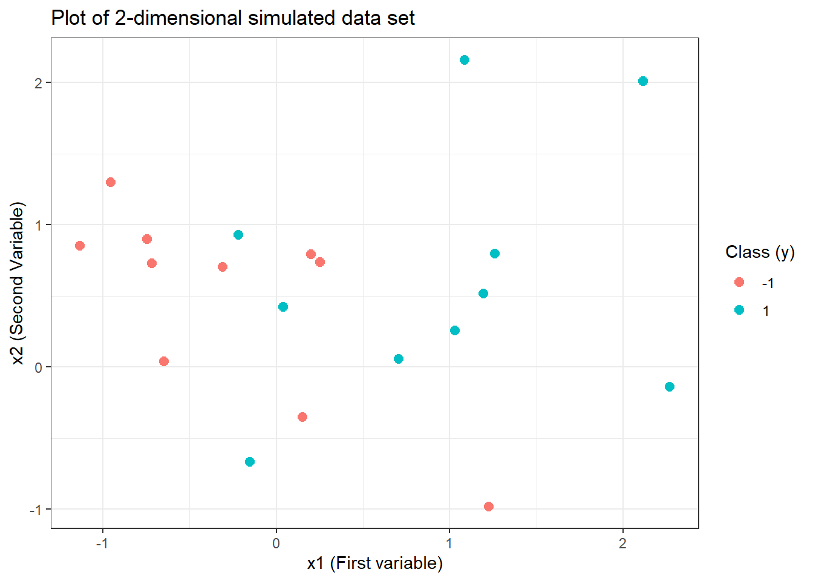
# Simpler Plot of data set with plot()
plot(
x = sv.data$x.1, y = sv.data$x.2, col = (3 - y),
xlab = "x1 (First variable)", ylab = "x2 (Second Variable)",
main = "Plot of 2-dimensional simulated data set",
pch = 20, cex = 1.5
)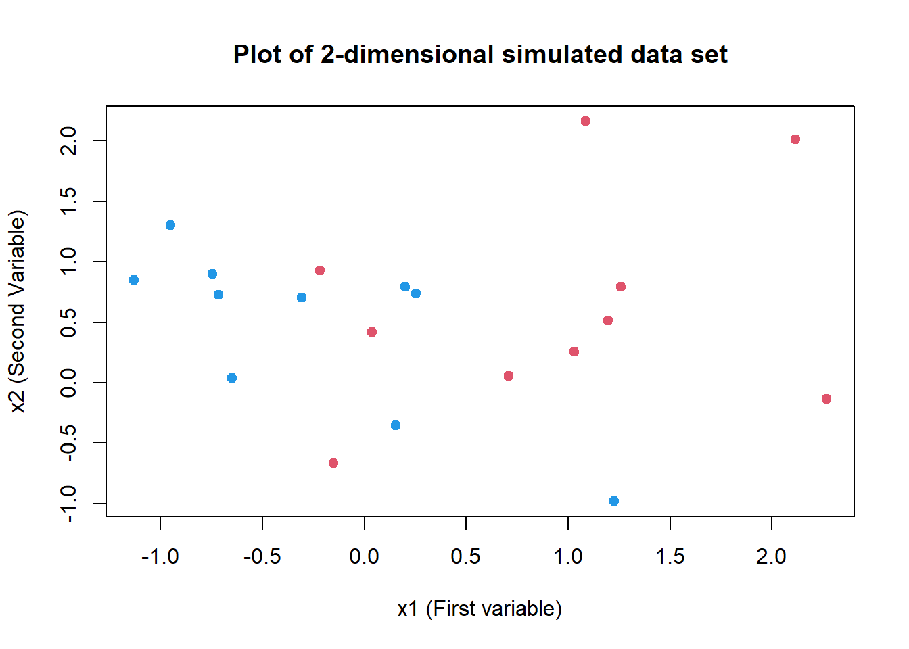
# Fitting a Support Vector Classifier on the data set
# (using a fixed arbitrary cost = 10)
svm.fit <- svm(y ~ .,
data = sv.data, kernel = "linear",
cost = 10, scale = FALSE
)
# Examining the Support Vector Classifier model
class(svm.fit)[1] "svm.formula" "svm" names(svm.fit) [1] "call" "type" "kernel" "cost"
[5] "degree" "gamma" "coef0" "nu"
[9] "epsilon" "sparse" "scaled" "x.scale"
[13] "y.scale" "nclasses" "levels" "tot.nSV"
[17] "nSV" "labels" "SV" "index"
[21] "rho" "compprob" "probA" "probB"
[25] "sigma" "coefs" "na.action" "fitted"
[29] "decision.values" "terms" summary(svm.fit)
Call:
svm(formula = y ~ ., data = sv.data, kernel = "linear", cost = 10,
scale = FALSE)
Parameters:
SVM-Type: C-classification
SVM-Kernel: linear
cost: 10
Number of Support Vectors: 12
( 6 6 )
Number of Classes: 2
Levels:
-1 1# Plotting the fitted Support Vector Classifier
plot(svm.fit, sv.data)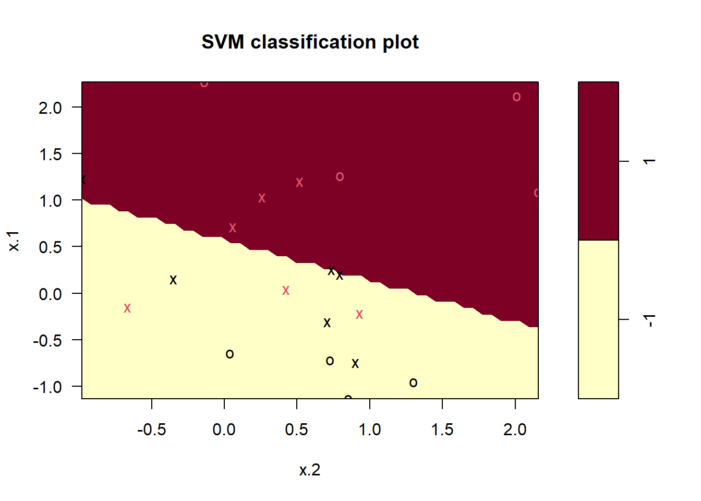
# Finding the support vectors in the svm.fit model
svm.fit$index [1] 1 2 4 5 6 9 11 14 15 16 19 20# Trying differen values of Cost Parameter
# Imposing lower cost: we expect wider margin, and more support vector
svm.fit.1 <- svm(y ~ .,
data = sv.data, kernel = "linear",
cost = 0.001, scale = FALSE
)
length(svm.fit.1$index)[1] 20# Finding the best Cost value in Cross-validation using tune()
set.seed(3)
# Making a vector of different cost values
costs <- 10^(-5:5)
# Running Cross Validation
cv.svm <- tune(svm, y ~ .,
data = sv.data, kernel = "linear",
ranges = list(cost = costs)
)
summary(cv.svm)
Parameter tuning of 'svm':
- sampling method: 10-fold cross validation
- best parameters:
cost
1
- best performance: 0.25
- Detailed performance results:
cost error dispersion
1 1e-05 0.80 0.35
2 1e-04 0.80 0.35
3 1e-03 0.80 0.35
4 1e-02 0.80 0.35
5 1e-01 0.30 0.35
6 1e+00 0.25 0.35
7 1e+01 0.25 0.35
8 1e+02 0.25 0.35
9 1e+03 0.25 0.35
10 1e+04 0.25 0.35
11 1e+05 0.25 0.35# Selecting the best model in cross-validation
best.svc <- cv.svm$best.model
summary(best.svc)
Call:
best.tune(METHOD = svm, train.x = y ~ ., data = sv.data, ranges = list(cost = costs),
kernel = "linear")
Parameters:
SVM-Type: C-classification
SVM-Kernel: linear
cost: 1
Number of Support Vectors: 13
( 6 7 )
Number of Classes: 2
Levels:
-1 1# Making predictions on a new data set using the best model
# Create a new data set
x.test <- matrix(rnorm(40), ncol = 2)
y.test <- sample(c(-1, 1), size = 20, replace = TRUE)
x.test[y.test == 1, ] <- x.test[y.test == 1, ] + 1
sv.test.data <- data.frame(
x = x.test,
y = as.factor(y.test)
)
# Plotting the test data set for confirmation that we did it right
plot(
x = sv.test.data$x.1,
y = sv.test.data$x.2,
col = 3 - y, pch = 20, cex = 1.5
)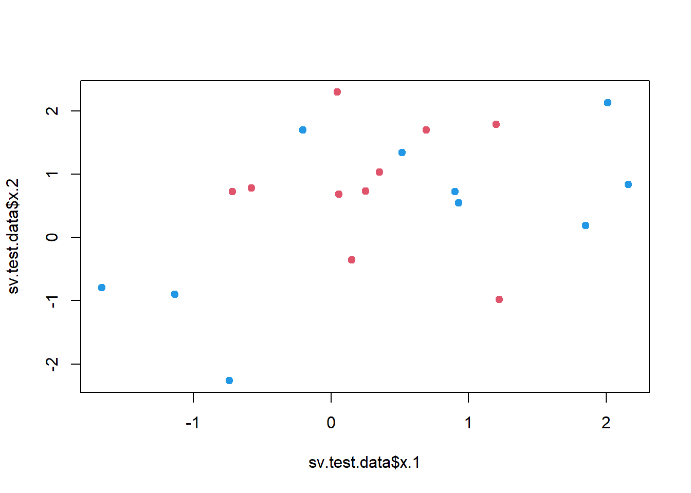
# Predicting the class for the new data set
pred <- predict(best.svc, newdata = sv.test.data)
result1 <- table(
predicted = pred,
truth = sv.test.data$y
)
result1 truth
predicted -1 1
-1 7 2
1 3 8# Percentage Correct
100 * (result1[1, 1] + result1[2, 2]) / sum(result1)[1] 75# New case where two classes are linearly separable (completely)
set.seed(3)
x <- matrix(data = rnorm(40), ncol = 2)
y <- c(rep(1, 10), rep(-1, 10))
x[y == 1, ] <- x[y == 1, ] + 2
sv.data <- data.frame(x = x, y = as.factor(y))
plot(
x = sv.data$x.1, y = sv.data$x.2, col = (3 - y),
xlab = "x1 (First variable)", ylab = "x2 (Second Variable)",
main = "Plot of 2-dimensional simulated data set",
pch = 20, cex = 1.5
)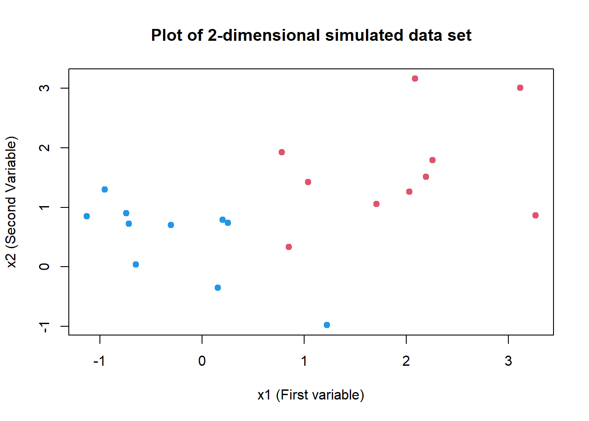
svm.fit <- svm(y ~ .,
data = sv.data, kernel = "linear",
cost = 10, scale = FALSE
)
plot(svm.fit, sv.data)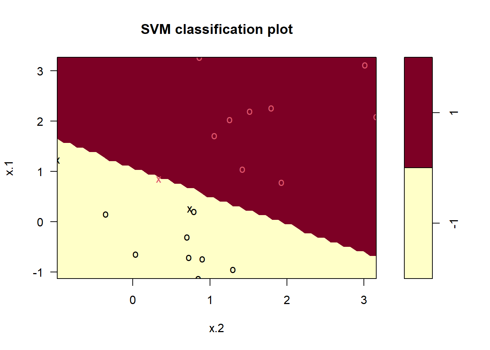
costs <- 10^(-5:5)
cv.svm <- tune(svm, y ~ .,
data = sv.data, kernel = "linear",
ranges = list(cost = costs)
)
best.svc <- cv.svm$best.model
x.test <- matrix(rnorm(40), ncol = 2)
y.test <- sample(c(-1, 1), size = 20, replace = TRUE)
x.test[y.test == 1, ] <- x.test[y.test == 1, ] + 2
sv.test.data <- data.frame(
x = x.test,
y = as.factor(y.test)
)
pred <- predict(best.svc, newdata = sv.test.data)
result2 <- table(
predicted = pred,
truth = sv.test.data$y
)
result2 truth
predicted -1 1
-1 7 0
1 1 12100 * (result2[1, 1] + result2[2, 2]) / sum(result2)[1] 95# Lastly, we fit a hyperplane with no misclassified observations
# using a very high value of cost
mmc.fit <- svm(y ~ .,
data = sv.data, kernel = "linear",
cost = 1e5, scale = FALSE
)
plot(mmc.fit, data = sv.data)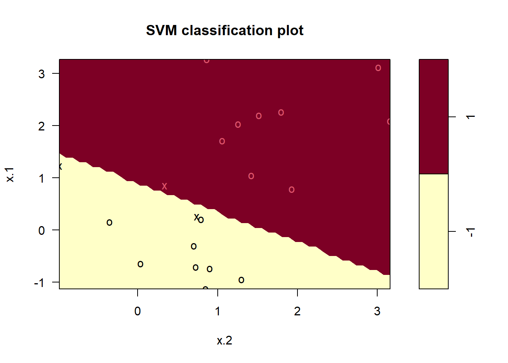
# Using a low value of cost
sv1.fit <- svm(y ~ .,
data = sv.data, kernel = "linear",
cost = 1, scale = FALSE
)
plot(sv1.fit, data = sv.data)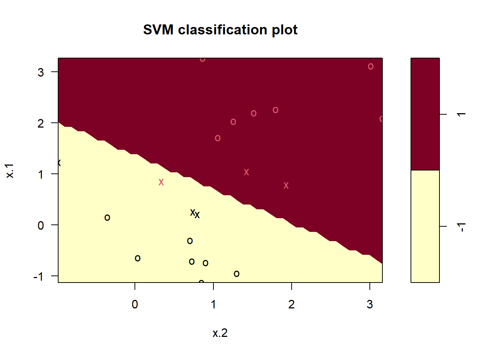
9.6.2 Support Vector Machine
We not fit a support vector machine model for classifying a data which decidedly has non-linear boundary between the two classes.
library(e1071)
# Set seed and options
options(digits = 2)
set.seed(3)
# Creating a new data set with non-linear boundary
x <- matrix(rnorm(400), ncol = 2)
y <- c(rep(1, 150), rep(2, 50))
x[1:100, ] <- x[1:100, ] + 2
x[101:150, ] <- x[101:150, ] - 2
svm.data <- data.frame(x = x, y = as.factor(y))
# Plotting the data to see whether it has a non-linear boundary
plot(
x = svm.data$x.1, y = svm.data$x.2, col = svm.data$y,
xlab = "x1 (First variable)", ylab = "x2 (Second Variable)",
main = "Plot of 2-dimensional simulated data set (non-linear boundary)",
pch = 20, cex = 1.5
)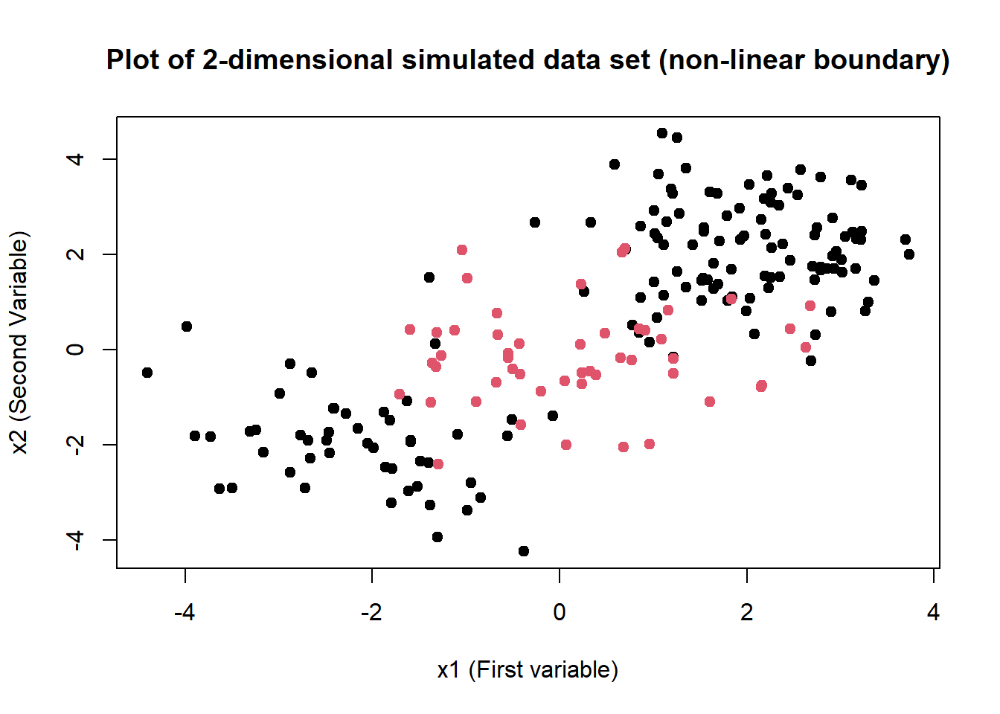
# Plotting with ggplot2
ggplot(data = svm.data) +
geom_point(aes(x = x.1, y = x.2, col = y),
pch = 20, size = 4
) +
labs(
x = "x1 (First variable)", y = "x2 (Second Variable)",
title = "Plot of 2-dimensional simulated data set (non-linear separation boundary)",
col = "Class (y)"
) +
theme_bw()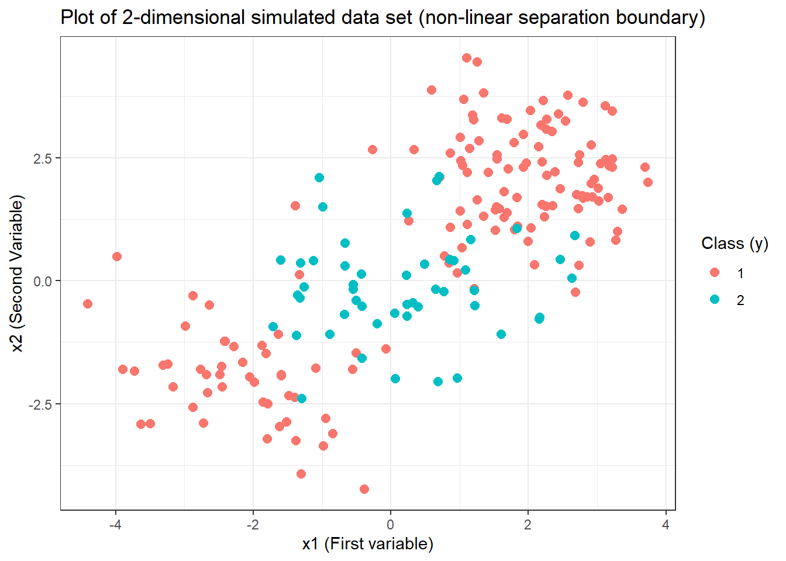
# Creating a training and test set using a boolean vector
train <- sample(c(TRUE, FALSE), size = 200, replace = TRUE)
test <- !train
# Fitting a Support Vector Machine model on the training set
svm.fit <- svm(y ~ ., data = svm.data[train, ], kernel = "radial", gamma = 1, cost = 1)
summary(svm.fit)
Call:
svm(formula = y ~ ., data = svm.data[train, ], kernel = "radial",
gamma = 1, cost = 1)
Parameters:
SVM-Type: C-classification
SVM-Kernel: radial
cost: 1
Number of Support Vectors: 36
( 21 15 )
Number of Classes: 2
Levels:
1 2plot(svm.fit, data = svm.data[train, ])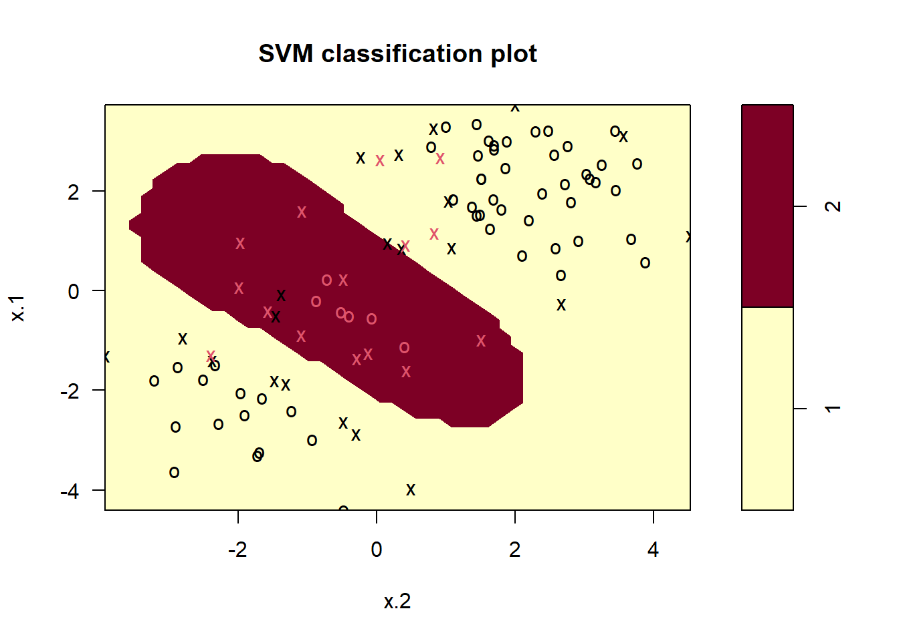
# Fitting a Support Vector Machine with high cost (minimal training errors)
svm.fit <- svm(y ~ ., data = svm.data[train, ], kernel = "radial", gamma = 1, cost = 1e5)
plot(svm.fit, data = svm.data[train, ])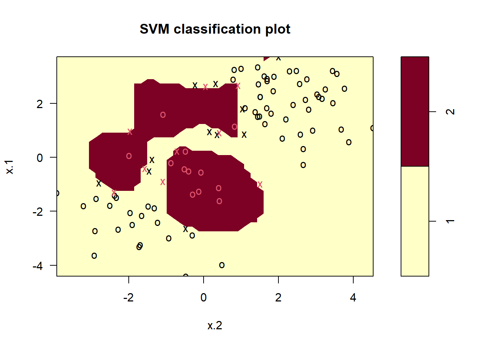
# Selecting the best value of cost and gamma using cross validation
cv.svm.fit <- tune(svm, y ~ .,
data = svm.data[train, ], kernel = "radial",
ranges = list(
cost = 10^(-2:3),
gamma = seq(from = 0.1, to = 10, length = 5)
)
)
best.svm <- cv.svm.fit$best.model
# Predicting classes in test data using best model selected by cross validation
pred2 <- predict(best.svm, newdata = svm.data[test, ])
tab2 <- table(predicted = pred2, truth = svm.data$y[test])
tab2 truth
predicted 1 2
1 68 6
2 7 23# Percentage mis-classified observations
100 * (tab2[1, 2] + tab2[2, 1]) / sum(tab2)[1] 129.6.3 ROC Curves
We can now create ROC curves using the ROCR package in R. For this, we need to create a customized function rocplot() and use it to plot a support vector machine model from previous section with differing values of \(\gamma\). We expect that at a high \(\gamma\), the radial kernel will fit the training data very closely producing a near perfect ROC curve.
library(ROCR)
# This package provides us two important functions:--
# prediction() - Every classifier evaluation using ROCR starts with creating a
# prediction object. This function is used to transform the input data (which
# can be in vector, matrix, data frame, or list form) into a standardized format.
#
# performance() - All kinds of predictor evaluations are performed using this function.
# Create a customized function to plot an ROC curve
rocplot <- function(pred, truth, ...) {
predob <- prediction(pred, truth)
perf <- performance(predob, "tpr", "fpr")
plot(perf, ...)
}
# Use fitted values in a new svm() object
svm.fit.roc1 <- svm(y ~ .,
data = svm.data[train, ], kernel = "radial",
gamma = 2, cost = 1, decision.values = TRUE
)
pred <- attributes(predict(svm.fit.roc1,
newdata = svm.data[train, ],
decision.values = TRUE
))$decision.values
par(mfrow = c(1, 2))
rocplot(
pred = pred, truth = svm.data[train, "y"],
main = "Training Data"
)
# Fitting training data with high value of gamma (more flexible fit)
svm.fit.roc2 <- svm(y ~ .,
data = svm.data[train, ], kernel = "radial",
gamma = 50, cost = 1, decision.values = TRUE
)
pred <- attributes(predict(svm.fit.roc2,
newdata = svm.data[train, ],
decision.values = TRUE
))$decision.values
rocplot(
pred = pred, truth = svm.data[train, "y"],
add = TRUE, col = "red"
)
legend("topleft",
lty = c(1, 1), col = c("black", "red"),
legend = c("gamma = 2", "gamma = 50")
)
# Plotting ROC Curves for test data
pred <- attributes(predict(svm.fit.roc1,
newdata = svm.data[test, ],
decision.values = TRUE
))$decision.values
rocplot(
pred = pred, truth = svm.data[test, "y"],
main = "Test Data"
)
pred <- attributes(predict(svm.fit.roc2,
newdata = svm.data[test, ],
decision.values = TRUE
))$decision.values
rocplot(
pred = pred, truth = svm.data[test, "y"],
add = TRUE, col = "red"
)
legend("topleft",
lty = c(1, 1), col = c("black", "red"),
legend = c("gamma = 2", "gamma = 50")
)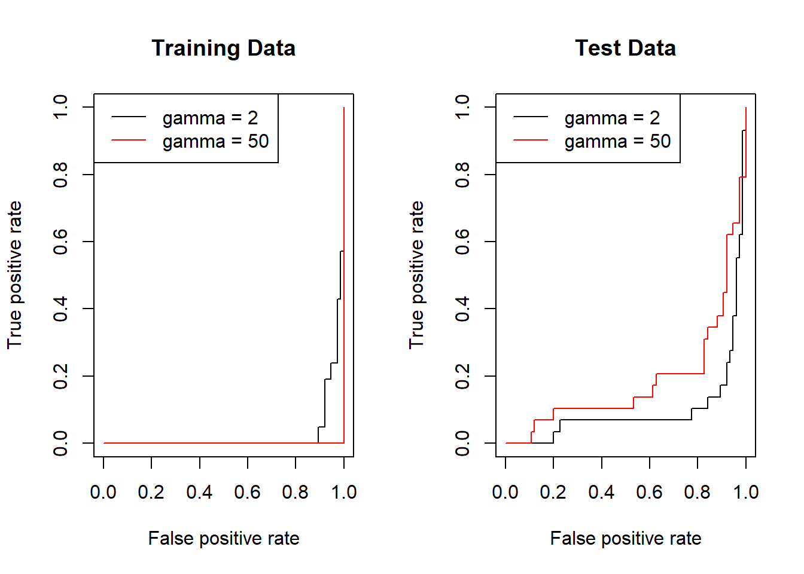
9.6.4 SVM with Multiple Classes
We can fit one-on-one approach based Support Vector Machines using the same svm() function from e1071 library.
# Creating a three class data (adding 50 new observations to svm.data's 200 existing observations)
x <- matrix(rnorm(100), ncol = 2)
x[, 1] <- x[, 1] - 2
x[, 2] <- x[, 2] + 2
y <- rep(3, 10)
df1 <- data.frame(x = x, y = as.factor(y))
svm.3.data <- rbind(svm.data, df1)
# Plotting the new data set
plot(
x = svm.3.data$x.1, y = svm.3.data$x.2, col = svm.3.data$y,
xlab = "x1 (First variable)", ylab = "x2 (Second Variable)",
main = "Plot of 2-dimensional simulated data set (non-linear boundary)",
pch = 20, cex = 1.5
)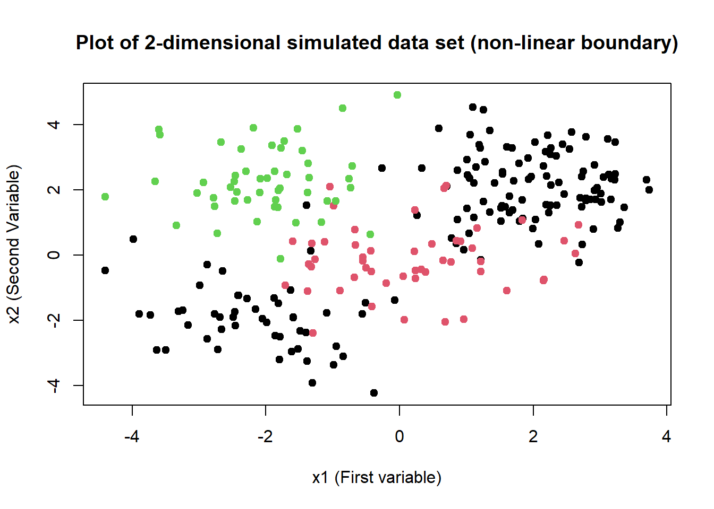
# Plotting with ggplot2
ggplot(data = svm.3.data) +
geom_point(aes(x = x.1, y = x.2, col = y),
pch = 20, size = 4
) +
labs(
x = "x1 (First variable)", y = "x2 (Second Variable)",
title = "Plot of 2-dimensional simulated data set (non-linear separation boundary)",
col = "Class (y)"
) +
theme_bw()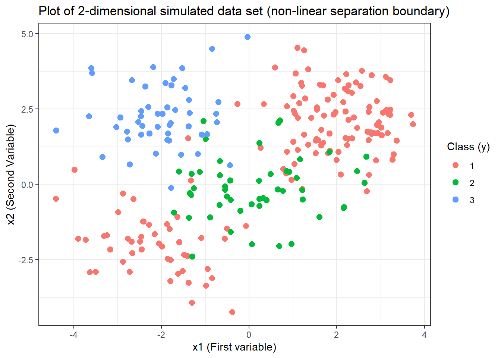
# Fitting a Support Vector Machine model (plot exchanges x.1 and x.2)
svm.3.fit <- svm(y ~ .,
data = svm.3.data, kernel = "radial", cost = 10,
gamma = 1
)
plot(svm.3.fit, data = svm.3.data)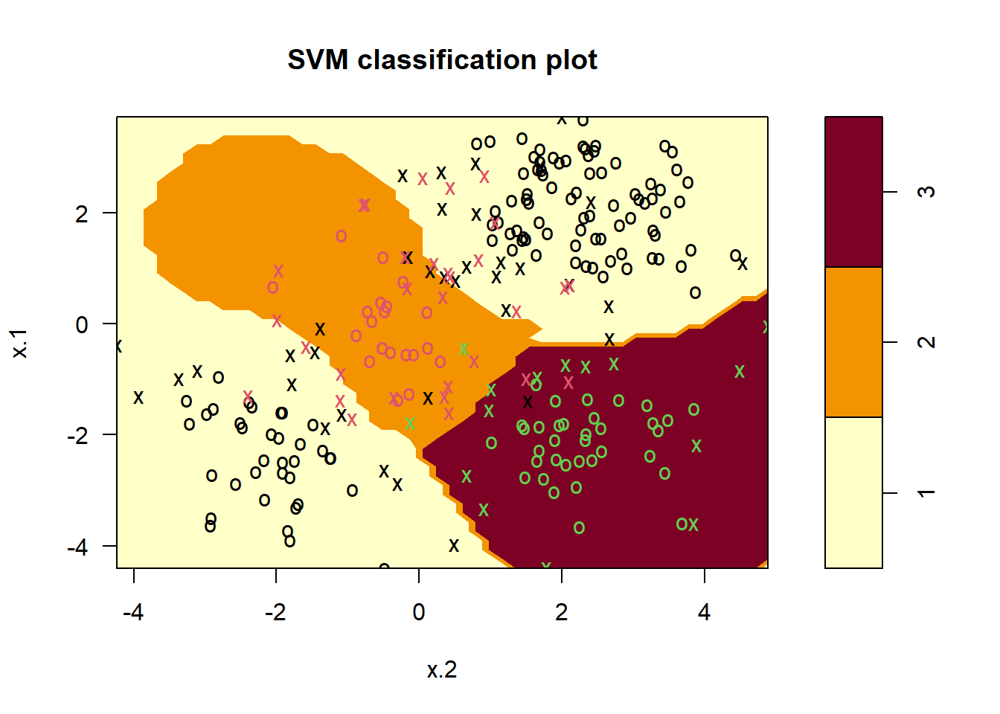
9.6.5 Application to Gene Expression Data
We will now use svm() on the Khan data set of gene expression from ISLR library.
# Loading Data Set and examining it
library(ISLR)
data("Khan")
names(Khan)[1] "xtrain" "xtest" "ytrain" "ytest" dim(Khan$xtrain)[1] 63 2308length(Khan$ytrain)[1] 63dim(Khan$xtest)[1] 20 2308length(Khan$ytest)[1] 20# Checking the number of classes of cells in two data sets: Testing and Training
table(Khan$ytrain)
1 2 3 4
8 23 12 20 table(Khan$ytest)
1 2 3 4
3 6 6 5 # Fitting an svm() with linear kernel (as there are already more variables than obsv.)
khan.train <- data.frame(x = Khan$xtrain, y = as.factor(Khan$ytrain))
svm.khan <- svm(y ~ ., data = khan.train, kernel = "linear", cost = 10)
summary(svm.khan)
Call:
svm(formula = y ~ ., data = khan.train, kernel = "linear", cost = 10)
Parameters:
SVM-Type: C-classification
SVM-Kernel: linear
cost: 10
Number of Support Vectors: 58
( 20 20 11 7 )
Number of Classes: 4
Levels:
1 2 3 4# Confusion matrix of predictions on training data - perfect match
table(svm.khan$fitted, khan.train$y)
1 2 3 4
1 8 0 0 0
2 0 23 0 0
3 0 0 12 0
4 0 0 0 20# Checking performance on test data
khan.test <- data.frame(x = Khan$xtest, y = as.factor(Khan$ytest))
pred <- predict(svm.khan, newdata = khan.test)
t <- table(pred, khan.test$y)
# Error rate on test observations
(1 - sum(diag(t)) / sum(t))[1] 0.1